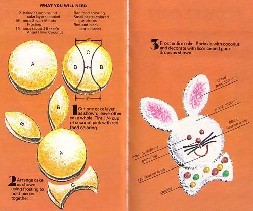

7th
April
2007
Baker’s Coconut Easter Bunny Cut-Up Cake
I’ve found my other book of Cut-Up Cakes!

Easter Bunny Cut-Up Cake instructions
This book is from 1973, and it isn’t nearly as cool as my 1959 booklet of Cut-Up Cakes, from a design point of view — but it has more cakes in it, including this great, full body Easter Bunny cake. Marie was asking for this — I hope it does the trick!

Another Bunny Cut-Up Cake
Another Bunny Cut-Up Cake
Here’s another, simpler Easter Bunny, from the same book.

[...] UPDATE: Looking for Easter Bunny Cut-Up Cakes? I’ve got some here: Baker’s Coconut Easter Bunny Cut-Up Cake [...]
posted on April 7th, 2007 at 12:37 pm
Is it possible for me to get a copy of the 1973 cut-out book? My mother-in-law had a copy of this recipe from an old magazine in the 70′s and she loaned it to me. Unfortunately, my dog chewed it up! Help! I need to replace it, and I have been searching the internet trying to find a duplicate of the article. I would love to get her this book as a peace offering. Thanks for your help.
posted on May 23rd, 2007 at 2:45 pm
Beth – just found a copy of what I think is the 1973 version – the cutout cupcake book that the Coconut easter Bunny came from! Bought it for $34 – ouch but totally worth it. Saw it for sale on other sites for $40-plus, but would be happy to photocopy for you if you don’t want to buy.
Aren’t these cakes the BEST?
posted on July 9th, 2007 at 1:38 pm
posted on August 6th, 2007 at 12:48 pm
I am looking for a pattern to use to make a penquin. Is there any in this book? I have made the bunny cake for years and never knew where it came from. Mom showed me before she died 30 years ago. Thanks for answering my long pondered question.
posted on August 31st, 2007 at 8:10 am
I have been using my mother’s 1959 and 1973 “Cut-up Cakes” books since I was very small. However, since these books are very tattered (at least 40 years later!), I am interestered in obtaining a new or re-printed “Cut-Up Cake” book(s). Is this possiible? Do you have new designs?
Thanks!
Kim Boyd
posted on October 12th, 2007 at 11:51 am
I used to make these cakes in the 70′s for my kids they thought I was the greatest.
I have lost the book by lending it to others and now would love to get one from the past
Is it possible?
posted on October 24th, 2007 at 1:56 pm
Hi
I also lent my 1970′s edition book out as Madeline did, and didn’t get it back.
Would it be possible for this book to be scanned as the 1959 one was ? thanks
posted on October 28th, 2007 at 9:41 am
I use to have this book, but lent it to someone who moved and never returned it to me. I use to make my kids Birthday Cakes from this book and would love to be able to use it for my Grandchildrens cakes. Is there any way to get another one????? I have the latest Bakers Cut Up Cake book but there are different ones in the 1970′s book.
Thanks
posted on February 21st, 2008 at 9:38 pm
I bought this book when I was a teenager. (The book was new then).
I made several cakes with my kids as they were growing up and now
am going to make the bunny cake for Easter with my grandaughters.
posted on March 7th, 2008 at 3:14 pm
I used to have 2 Bakers Coconut cut-up cake books. I found the one book on line – the one
the one that has the lion, penquin, giraffe, etc. but I can’t find the other book. It
had a cake a month – January was a snowman, Feb. was a heart, a bunny was either March or
April, September was a school house, October was a witch, Nov. a turkey and Dec. was Santa,
I think. I don’t remember the other months. But I really need to find this book. Does
anyone know where or is it on line somewhere??? Help!
posted on July 9th, 2008 at 9:14 pm
Hey everyone this is a long shot, but here it goes. I need one of these books, it is a suprise to my mom. Her mother used to have one, and some how after she died it got lost. Anyone have any ideas/websites as to where i can find one? Thanks!
posted on August 2nd, 2008 at 8:39 pm
I had one of the Bakers books that had a train cake cut out. Does anybody have the directions? I am needing it for a friend’s daughters birthday. Thanks
posted on August 15th, 2008 at 6:13 pm
Anyone know where I can get a copy of the Bakers Cut up Cake book?
posted on October 21st, 2008 at 8:47 am
I am very interested in obtaining a copy of the 1973 Bakers’ Cut Up Cake Book. There was a picture of the Bunny Cake on the front. Other cakes in the book were the Rocking Horse, The House, The Lion, The Pink Elephant, The Butterfly….
I made these cakes for my daughters, and would now like to make them for my grandchildren.
I would even be willing to pay for photo copies of the books pages. Thank you.
posted on November 23rd, 2008 at 5:36 pm
Wow, My Mom and I were just talking about the Bakers Coconut Cut Up Cakes at Christmas.
I remember her making the Elenphant for my birthday one year.
That was/in one of my Favorite Recipe Books of all time. It would take me literally hours
to look at the 16 cakes to decide what I wanted Mom to make for me.
This brings back such good memories.
If anyone knows how I can get one of the books please let me know. Or if anyone would be
willing to make me some colored full size copies that would be great. I would pay up you
a reasonable price.
Thanks,
Carol
justpookie@gmail.com
posted on January 12th, 2009 at 4:42 am
Since it has been some 40 yrs. ago since I had the 1970 Cutups Celebration Cakes by Bakers Coconut – I am totally sure I finally got rid of it. Now I have 4 grandchildren and need it back !!!! Where can I order one ??
Thanks,
Pat Rygiewicz
posted on January 18th, 2009 at 4:22 pm
where can i get bakers coconut that is shredded not flakes ? the bag is orange rather than blue
posted on February 17th, 2009 at 6:12 pm
I am now a Grandmother of 4, and have misplaced or loaned out my books for cutup cakes and desperately need them. I am willing to pay for them. I believe that I had 2 books, one was animals and the other one was had a variety in it.. I will even accept photo copies.
Hopefully there is someone out there that can help me.
Thank you in advance.
posted on April 2nd, 2009 at 3:01 pm
My first Bunny Rabbit Cake was in 1978 and I’ve done one for all my kids and now this will be my last one for my last grandchild. Thanks so much for all the years of happiness this has brought to my children and grandchildren.
posted on April 4th, 2009 at 12:29 pm
A dear family friend used to make the “Easter Bunny Cake” every Easter. She always did an excellant job and our large family really enjoyed it. I loaned out my recipe & cutout form and it has not turned up in my recipe collection. There are plenty of designs out there for this cake but this is the only one used by my family for years. My oldest grandson is helping me make the Easter Bunny Cake for our family Easter meal with lots of 7 minute coconut frosting.
Whew, you saved the day! Happy Easter
posted on April 6th, 2009 at 1:09 pm
Oh! I stumbled acropss your site while checking for a possible Bunny Cake recipe. I had a sudden nostalgic memory of the cut-up cakes. I remember too growing up in the 70s and flipping through my mom’s well battered copy of the animal cut-ups. I can still picture the cakes on her big foil covered pastry board! Thanks for the memories and for the bunny cake scan!
posted on April 8th, 2009 at 5:52 am
Thank you so much for posting these! I remember this photos and baking these with my mom and sister when we were little
Do you know who published the book?
posted on April 11th, 2009 at 6:57 am
The bunny looks so delicious!..
I will make a carrot cake so that your bunny cake will have a partner!.. =)
posted on April 14th, 2009 at 10:11 pm
Any ideas on where I can find the pattern for the cut-up “flower” cake?? My mom made it for me when I was little and I’d lover to make it for my daughter’s 3rd birthday!! Anyone have it without me having to buy the whole book?
posted on April 29th, 2009 at 12:50 pm
Did anyone ever find the calendar book? I’ve been looking forever (still can’t believe my mother’s got tossed). Snowman; heart; I can’t remember March, I think the bunny was April; a May pole; Dad for June? there was a DAD cake; a sailboat for July or August the other I cannot remember; schoolhouse; witch, turkey and Santa. I think there’s a kite in there somewhere and I’m still short one. We never made any except the bunny but I LOVED that book, the geometry was wild on some of the cakes!
posted on May 2nd, 2009 at 4:30 pm
March is a clown, July an eaglet, there was no kite, phew, now I can rest!
posted on May 2nd, 2009 at 4:49 pm
The following website has a copy of the book that alot of you are looking for
http://photo.humuhumu.com/v/cutupcakes/IMG_6266.jpg.html
posted on May 27th, 2009 at 2:02 pm
I would love to find the directions for a bicycle cut-up cake for my son’s 50th birthday cake. He is a cyclist and as he was growing up I made him a cut-up cake for his birthday every year. He lives in Calif. , races his 10 speed bike and is coming to Florida for his birthday celebration. I used to have the Baker’s Coconut book, but I can’t find it. I believe they had another book where I found the bicycle. Could you please help me? He is coming on Feb. 5th. NaOMI
posted on January 28th, 2010 at 6:44 pm
My mom made me this cake for my 1st birthday! I even have a pic of me sitting next to it. This book is awesome – I use it when making birthday cakes for the little girls I teach at church.
posted on January 29th, 2010 at 7:06 pm
Hi! Someone lent me a recipe for a 3d turkey cake that was formed with cut up cake and cookies for the feathers. It was a folded magazine page and I think it was thrown away in error. She wants her recipe back and I have spent hours searching the internet for one to replace the one I lost. She said it came from parents magazine or parenting magazine but no luck there so far. Has anyone seen it? Do you have a copy of it? I would gladly pay for a copy.
posted on February 19th, 2010 at 7:08 am
http://www.artbaxter.com/esoterica-pages/bakers_coconut-index.html
posted on February 24th, 2010 at 12:32 pm
http://www.webcrawler.com/webcrawler302/ws/results/Web/Patterns%20for%20Cakes%20You%20Cut%20up/1/407/TopNavigation/Relevance/zoom=off/_iceUrlFlag=7?_IceUrl=true
posted on February 24th, 2010 at 12:40 pm
injoy these cutout cakes. ABOVE LINKS great memories were made through the years. Injoy.
posted on February 24th, 2010 at 12:46 pm
I am so happy to have found these cakes. My mom always made the simpler one for Easter but we haven’t had it in years and years. This year my daughter’s birthday falls on Easter, so thought I would make this instead of a traditional cake. My mom passed away 18 months ago, so don’t have her as a resource for the recipe any more. Thank you so much.
posted on March 31st, 2010 at 1:10 pm
Does anyone have the 1971 Bakers Coconut “Cut-out cakes” book, I am looking for the Social Lion,Tiger, perfect doll and Cuckoo cut-out cakes.
I do have the rest of the book and would share with someone.
Thank you,
Tricia
posted on June 28th, 2010 at 9:45 am
Does anyone have the 1971 Bakers Coconut “cut-out cakes” book, I am looking for the Social Lion, Tiger, Perfect doll and Cuckoo”
I do have the rest of the book and would share with someone.
triciajoann@reachone.com
Thank you
Tricia
posted on June 28th, 2010 at 9:51 am
I HAD YOUR BOOK ON CUT OUT CAKES AND CAN NOT SEAM TO FIND IT. I AM INTERESTED IN FINDING HOW I CAN GO ABOUT GETTING A COPY
THANK YOU VERY MUCH
posted on March 23rd, 2011 at 7:11 pm
It is so good to see a cake from this book! It brings back many memories. My mom made this cake and many others from the same book for me when I was a little girl. Now that I am a mother, I use the same book to make special occassion cakes for my son. Happy Easter Everyone!
posted on April 6th, 2011 at 7:34 am
I cant believe this is still around. Im so happy to have found it! As a child I remembered my oldest sister making this cake (im now in my 40s) Thank you for posting this! I remember the book that she had also had a sailboat and a baby carriage (cant remember the others)
Thank you!!
posted on April 11th, 2011 at 8:34 pm
[...] Easter Bunny Cut-Up Cake junkyardclubhouse.com [...]
posted on April 22nd, 2011 at 12:32 am
I am interested in obtaining the Animal Cut up Cakes from General Foods and Bakers Coconut from the 70′s.
I an looking for the Snoopy Dog cut up cake. I made it for my daughter’s 5th birthday and now my granddaughter would like one. I have a picture of the finished cake, but would like the pattern.
Thank you so much
posted on June 12th, 2011 at 10:23 am
My email for the Snoopy Dog cut out cake pattern from the 70′s is dmcholland@fuse.net
posted on June 12th, 2011 at 10:24 am
[...] Easter Bunny Cut-Up Cake junkyardclubhouse.com [...]
posted on August 19th, 2011 at 8:48 am
I can’t believe that I found this website. I am also looking for the cutout book – I think the one I am interested in was published around 1973. My Mom gave it to me when I married and I made the bunny cake, the hot air ballon and the baby carriage. Now I would like to make some of the cakes for my grandson but surprise, the book is among the missing. Any thoughts as to where I can get a copy. Thanks Ladies! Jo Mary
posted on September 5th, 2011 at 11:19 am
Hi, I have a 2 different books on cut up cakes, one from when I was a child.. one is a coconut book and the other a betty crocker… How do I scan them and put it on the internet so others can access them like they did the lion/ elephant etc book I had also lost like so many of you? Is there a place to upload pictures on this site? thanks!
posted on September 26th, 2011 at 12:22 am
[...] L’idée générale pour le lapin vient d’ICI. [...]
posted on January 27th, 2012 at 7:47 am
These are very nice. I created downloadable cut up cake patterns — many inspired by the Bakers cut up cakes and new designs of my own. You can see all the designs currently available at http://cakeshapesdesigns.com
posted on January 27th, 2012 at 9:19 pm
I had both of these cakes growing up – the book has gone missing and I’d love to find a copy at a garage sale or second hand book shop! Thanks for bringing those memories back!
posted on January 31st, 2012 at 2:19 pm
The bunny with the face and bow is the easiest. I use the cherry Supereme for my granddaughters birthday (April 5th) she is 2 yr old. Also Choc. makes a great cake as the Great Easter Chocolate bunny.
posted on April 5th, 2012 at 1:00 pm
Thank you so much for posting this! My mom used to make this cake for me back in the 60s when I was a little girl. So great to find it!
posted on April 8th, 2012 at 5:44 pm
Does anyone know where I can get a photocopy of the 1956 Baker’s coconut book “A Calendar of New Cake-Making Ideas” which features a themed cake for each month of the year? I am willing to pay for it.
posted on June 3rd, 2012 at 11:40 pm
I also was looking for a copy of the books.I recall making the cakes for my children, they enjoyed cutting the licorice and gum drops. we even took a few drops of green color and added it to the coconut for a background around the bunny.I recall the umbrella but can’t remember how to cut it out.There was also a hat.All I can say we had fun..make copies of everything you make, you’ll be glad years down the line. Enjoy your children as they grow up too fast.
posted on July 8th, 2013 at 7:26 am